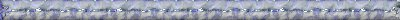
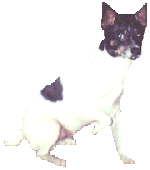
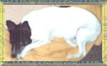

In 1999 we were saddened
to lose two of our loving companions within months of each other. Freckles
went to sleep peacefully with his family around him here on Valentine's
Day, and then in September Baxter said goodbye and went to sleep also peacefully
at home with his family here.
I remind myself daily
that they are no longer in pain, and are angels looking down on us and
helping us continue to love and cherish their sisters and brother.


One day in May 1983
we saw Freckles on the side of a busy road. He was so skinny and had sores
on him. The vet said he was only a few months old, and was suffering malnutrition.
He had won our hearts and we were rewarded with many years of love and
devotion. He loved people and going for rides in the car, but his favourite
was playing ball. Even when he started to lose his sight due to cataracts
he would still love a game of ball. He would often fall asleep with
one beside him, his own security blanket. His arthritis slowed him down
a lot, but he still loved a game of ball. He was a fighter and loved life.
until that very hot day in February when, wrapped in a cool damp
towel, he said his goodbye to us and went to sleep.

In December of 1983
we got Baxter from a friend. He was just a pup, and a great playmate for
Freckles. He wasn't into playing ball as much, and would often hide the
ball and sit back and watch Freckles looking for it. LOL.I'm sure he was
smiling. He loved being brushed altho to look at his pics you wouldn't
think he ever was. He also loved to roll in the grass especially after
a bath. He was very protective of the family and certainly let us know
if anyone was at the door. He also got arthritis and sometimes had trouble
getting up onto a lounge. He liked the bed we made for him on the floor
with cushions to keep him warm and comfortable. His own pain from the arthritis
plus the grief of losing his best mate became too much for him and in September
he said goodbye and went to sleep for the last time with us here.
Both these wonderful
friends we were given are greatly missed, but I know they are free from
pain now, watching over us and waiting for us at Rainbow Bridge. We still
have many memories to hold on to till we see them again.
|